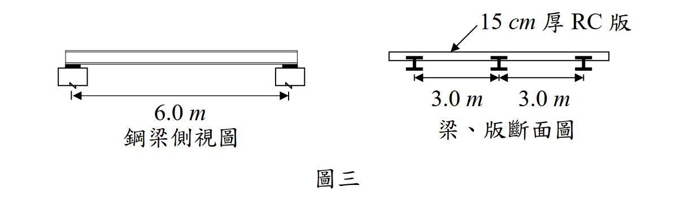

考題編號：SS-2010-4
主分類： SS-U1-2 梁桿件
副分類： 無
設計法： LRFD
標籤： 梁桿件 斷面選擇 使用性撓度 LRFD 全側撐 塑性力矩 RH斷面 樓版載重 撓度檢核 自重迭代 翼板結實性
1. 原始題目重述 (Problem Restatement)
有一 15 cm 厚鋼筋混凝土版由鋼梁支撐，鋼梁為跨距 6.0 m 之簡支承，梁與梁之間距為 3.0 m，上翼版埋入混凝土版內（如圖三），混凝土單位重 2.4 tf/m³，版面上貼大理石面磚，重 30 kg/m²，樓版承受活載重 400 kg/m²，荷重僅考慮靜載重與活載重之組合，試使用 A992 鋼料（降伏強度 $F_y = 3.52\ \text{tf/cm}^2$，$E = 2{,}040\ \text{tf/cm}^2$），以極限設計法（LSD）參考下表設計：
- 僅就力矩考量，設計一最經濟之 RH 梁斷面。（15 分）
- 檢核此斷面之撓度是否合乎 L/360 之規定。（15 分）

圖說：鋼梁跨距 6.0m，梁間距 3.0m（兩側各 3.0m），RC 版厚 15cm。梁的上翼版埋入混凝土版內，即壓力翼版全程獲側向支撐（不發生側扭挫屈）。
題目給定之 RH 斷面表（原卷「參考下表」，共 5 組候選）：
| RH 斷面 (H×B) | $S_x$ (cm³) | $Z_x$ (cm³) | $I_x$ (cm⁴) | $r_y$ (cm) | $X_1$ (tf/cm²) | $X_2$ (cm²/tf)² | 單位重 (kg/m) |
|---|---|---|---|---|---|---|---|
| 175×175 | 331 | 370 | 2,900 | 4.37 | 288 | 0.102 | 40.4 |
| 298×149 | 424 | 475 | 6,320 | 3.29 | 128 | 3.07 | 32.0 |
| 200×200 | 472 | 525 | 4,720 | 5.02 | 267 | 0.135 | 49.9 |
| 244×175 | 495 | 550 | 6,040 | 4.21 | 201 | 0.451 | 43.6 |
| 200×204 | 498 | 565 | 4,980 | 4.88 | 309 | 0.0853 | 56.2 |
表中 $X_1$、$X_2$ 為 LTB 參數（$L_r$ 計算用），本題因上翼版全側撐而不需使用，屬題目故意放置之干擾資訊。
2. 考題核心精神與出題者意圖 (Core Concepts & Examiner's Intent)
核心觀念：梁設計雙重驗算——強度（$\phi_b M_n \geq M_u$）與使用性（$\delta_L \leq L/360$）
本題為樓版支撐鋼梁的完整設計流程：先由強度條件選斷面，再驗算活載重撓度。題目關鍵條件是「上翼版埋入混凝土版內」，直接告知考生無側扭挫屈（LTB），可直接取 $\phi_b M_p$。撓度與強度往往各自控制不同情況，本題示範撓度（使用率 98.6%）比強度（87.2%）更接近上限的典型案例。
出題者測驗重點：
- 「上翼版埋入」= 全側撐 = 無 LTB：壓力翼版全程側向支撐，$\phi_b M_n = \phi_b M_p = \phi_b F_y Z_x$
- 載重集水寬度：每根梁承擔 3.0 m 寬的載重（梁間距），線載重 = 面積載重 × 集水寬
- 撓度用未因數化活載重：$L/360$ 限值針對活載重撓度，用服務載重（不乘 1.6），非因數化載重
- 自重迭代：初步選斷面後須含自重再驗算，本題 RH298×149 因含自重後 $M_u$ 微超 $\phi_b M_n$ 而被淘汰
3. 解題戰略地圖與陷阱分析 (Strategic Roadmap & Trap Analysis)
作戰計畫：
(一) 斷面設計：
Step 1 計算線載重：wD（RC版 + 面磚）× 3m，wL × 3m
Step 2 設計力矩：wu = 1.2wD + 1.6wL，Mu = wuL²/8
Step 3 需求 Zx ≥ Mu/(φb Fy)
Step 4 從斷面表選最輕的 Zx 足夠者（含自重迭代驗算）
(二) 撓度檢核：
Step 5 以活載重（服務載重，wL，不乘係數）計算撓度
Step 6 δL = 5wLL⁴/(384EIx)
Step 7 比較 δallow = L/360
陷阱分析：
| 陷阱 | 說明 | 對策 |
|---|---|---|
| ❶ 撓度用因數化載重 | 撓度為使用性（Serviceability）驗算，用未因數化活載重，非 $1.6w_L$ | $\delta = 5w_L L^4/(384EI)$，$w_L$ 是服務載重 |
| ❷ 忘記含自重後迭代 | 初步選斷面後需加入梁自重重新計算 $M_u$，再驗算是否仍通過 | 自重修正通常使 $M_u$ 增加 1～3%，可能使原斷面不足 |
| ❸ 「上翼版埋入」不知含義 | 誤以為仍需計算 LTB，套 $C_b$、$L_p$、$L_r$ | 壓力翼版全側撐 → 直接 $\phi_b M_n = \phi_b F_y Z_x$ |
| ❹ 集水寬搞錯 | 梁間距 3.0 m，但承擔的是左右各 1.5 m 共 3.0 m的載重 | 集水寬 = 梁間距 = 3.0 m（每根梁各承擔兩側各半） |
| ❺ 單位換算 | $w_L$ 須從 tf/m 換為 tf/cm（除以 100），$L$ 須從 m 換為 cm（乘以 100） | 撓度公式全用 cm 單位：$w_L = 0.0120$ tf/cm，$L = 600$ cm |
3.5 變數層次分析（Variable Hierarchy Analysis）
複習提示：解題後，在每個卡住的知識點「卡關?」欄標記
⚠；第二次複習時只看有⚠的項目。
最終目標： 選最輕合格 RH 鋼梁斷面（$\phi_b M_n \geq M_u$）→ 驗算活載重撓度（$\delta_L \leq L/360$）
主要公式（$\boxed{\phantom{x}}$ = 未知，待推導）
Step 1：需求力矩（LRFD）
$$\boxed{w_u} = 1.2 w_D + 1.6 w_L, \quad \boxed{M_u} = \frac{\boxed{w_u} L^2}{8}$$
Step 2：斷面強度需求
$$\boxed{Z_{x,req}} \geq \frac{\boxed{M_u}}{\phi_b F_y}$$
$$\phi_b M_n = \phi_b F_y \boxed{Z_x} \geq \boxed{M_u} \quad \text{（全側撐 → 無 LTB）}$$
Step 3：活載重撓度
$$\boxed{\delta_L} = \frac{5 w_L L^4}{384 E \boxed{I_x}} \leq \frac{L}{360}$$
L1：題目直接給定
| 符號 | 數值 | 說明 |
|---|---|---|
| $L$ | 6.0 m = 600 cm | 梁跨距 |
| 梁間距 | 3.0 m | 集水寬 |
| RC 版厚 | 15 cm | 單位重 2.4 tf/m³ |
| 面磚 | 30 kg/m² | 靜載重附加 |
| 活載重 | 400 kg/m² | 服務載重 |
| $F_y$ | 3.52 tf/cm² | A992 鋼料 |
| $E$ | 2040 tf/cm² | 彈性模數 |
| $\phi_b$ | 0.9 | 彎曲強度折減係數 |
| 側撐條件 | 上翼版埋入 RC 版 | 全側撐，無 LTB |
L2：需知識點推導
Step 1：線載重計算
| 符號 | 公式 / 來源 | 卡關? |
|---|---|---|
| $w_D^{(0)}$ | $(0.15 \times 2.4 + 0.030) \times 3.0 = 1.170$ tf/m（不含自重） | |
| $w_L$ | $0.400 \times 3.0 = 1.200$ tf/m | |
| $w_u^{(0)}$ | $1.2 \times 1.170 + 1.6 \times 1.200 = 3.324$ tf/m | |
| $M_u^{(0)}$ | $3.324 \times 6.0^2 / 8 = 14.96$ tf-m = 1496 tf-cm |
Step 2：斷面選擇（含自重迭代）
| 符號 | 公式 / 來源 | 卡關? |
|---|---|---|
| $Z_{x,req}$ | $M_u^{(0)} / (\phi_b F_y) = 1496 / (0.9 \times 3.52) = 472.2$ cm³ | |
| RH298×149 | $Z_x = 475$ cm³，自重 32.0 kg/m → 含自重 $M_u = 1513 > \phi_b M_n = 1505$（不通過） | |
| RH175×175 | $Z_x = 370 \ll 472.2$ → 強度不足，逕予淘汰 | |
| RH244×175 | $Z_x = 550$ cm³，自重 43.6 kg/m → 含自重 $M_u = 1519 < \phi_b M_n = 1742$（通過） |
Step 3：活載重撓度
| 符號 | 公式 / 來源 | 卡關? |
|---|---|---|
| $w_L$（tf/cm） | $1.200 / 100 = 0.01200$ tf/cm | |
| $I_x$ | 6040 cm⁴（RH244×175，查手冊） | |
| $\delta_L$ | $5 \times 0.01200 \times 600^4 / (384 \times 2040 \times 6040) = 1.643$ cm | |
| $\delta_{allow}$ | $L/360 = 600/360 = 1.667$ cm | |
| 結果 | $1.643 < 1.667$ ✓（使用率 98.6%） |
L3：深層知識（不懂就卡住）
| 知識點 | 說明 | 補強頁 | 卡關? |
|---|---|---|---|
| 「上翼版埋入」= 全側撐 = 無 LTB | 壓力翼版全程側向支撐，$\phi_b M_n = \phi_b M_p = \phi_b F_y Z_x$，不需算 $C_b$、$L_p$、$L_r$ | [[ltb-3zone]] · [[LATERAL-TORSIONAL-BUCKLING]] | |
| 撓度用服務載重（未因數化） | 撓度為使用性（Serviceability）驗算，用 $w_L$（非 $1.6w_L$）；強度用因數化 $w_u$ | ||
| 自重迭代必要性 | 初估合格的最輕斷面加入自重後可能 $M_u > \phi_b M_n$（本題 RH298×149 超過 0.55%） | ||
| 翼板結實性 | $\lambda_f = b_f/2t_f \leq 17/\sqrt{F_y}$ 才可取 $M_n = M_p$；RH298×149 之 $\lambda_f = 9.31 > 9.06$ 為非結實 | [[LOCAL-BUCKLING-FLANGE]] | |
| 集水寬 = 梁間距 | 每根梁承擔兩側各 1.5 m，共 3.0 m；非兩倍梁間距 | ||
| 單位換算（tf/m → tf/cm） | 撓度公式全用 cm 單位：$w_L$ 除以 100，$L$ 乘以 100 |
4. 步驟化詳細計算過程 (Step-by-Step Calculation)
側向支撐條件
上翼版埋入混凝土版內 → 壓力翼版全長側向支撐（$L_b = 0$），無側扭挫屈（LTB）：
$$\phi_b M_n = \phi_b M_p = \phi_b F_y Z_x = 0.9 \times 3.52 \times Z_x$$
一、斷面設計（僅就力矩）
Step 1：載重計算（集水寬 = 3.0 m）
| 靜載重來源 | 單位面積重 | 線載重（×3.0 m） |
|---|---|---|
| RC 版（$0.15 \times 2.4$） | $0.360\ \text{tf/m}^2$ | $1.080\ \text{tf/m}$ |
| 大理石面磚 | $0.030\ \text{tf/m}^2$ | $0.090\ \text{tf/m}$ |
| 合計（不含自重） | $w_D^{(0)} = 1.170\ \text{tf/m}$ |
$$w_L = 0.400 \times 3.0 = 1.200\ \text{tf/m}$$
Step 2：設計力矩（不含自重初估）
$$w_u^{(0)} = 1.2 \times 1.170 + 1.6 \times 1.200 = 1.404 + 1.920 = 3.324\ \text{tf/m}$$
$$M_u^{(0)} = \frac{3.324 \times 6.0^2}{8} = 14.96\ \text{tf·m} = 1{,}496\ \text{tf·cm}$$
Step 3：需求塑性斷面模數
$$Z_{x,req} \geq \frac{M_u}{\phi_b F_y} = \frac{1{,}496}{0.9 \times 3.52} = 472.2\ \text{cm}^3$$
Step 4：選擇斷面（含自重迭代）
初選 RH298×149（最輕，$Z_x = 475\ \text{cm}^3$，自重 32.0 kg/m）含自重驗算：
$$w_u = 1.2 \times (1.170 + 0.032) + 1.6 \times 1.200 = 1.442 + 1.920 = 3.362\ \text{tf/m}$$
$$M_u = \frac{3.362 \times 36}{8} = 1{,}513\ \text{tf·cm}; \quad \phi_b M_n = 0.9 \times 3.52 \times 475 = 1{,}505\ \text{tf·cm}$$
$$M_u = 1{,}513 > 1{,}505 \quad \Rightarrow \text{不通過（超過 0.55%，嚴格不合格；另見 §5.5 之翼板非結實佐證）}$$
依單位重由輕到重的下一組是 RH175×175（40.4 kg/m），但 $Z_x = 370 \ll 472.2$，強度差距 29%，逕予淘汰。
再改選 RH244×175（$Z_x = 550\ \text{cm}^3$，自重 43.6 kg/m）：
$$w_u = 1.2 \times (1.170 + 0.0436) + 1.6 \times 1.200 = 1.4563 + 1.920 = 3.376\ \text{tf/m}$$
$$M_u = \frac{3.376 \times 36}{8} = 1{,}519\ \text{tf·cm}; \quad \phi_b M_n = 0.9 \times 3.52 \times 550 = 1{,}742\ \text{tf·cm}$$
$$M_u = 1{,}519 < 1{,}742 \quad \checkmark \quad (\text{使用率 } 87.2\%)$$
$$\boxed{\text{選用 RH244×175（最經濟斷面，自重 43.6 kg/m）}}$$
Step 4 附表：五組候選斷面全檢核（含自重迭代）
| 斷面 | 單位重 (kg/m) | $Z_x$ | $\phi_bM_p$ (tf·cm) | 含自重 $M_u$ (tf·cm) | 彎矩 | $I_x$ | $\delta_L$ (cm) | 撓度 |
|---|---|---|---|---|---|---|---|---|
| 298×149 | 32.0 | 475 | 1,504.8 | 1,513.1 | ❌ 100.55% | 6,320 | 1.571 | ✓ 94.2% |
| 175×175 | 40.4 | 370 | 1,172.2 | 1,517.6 | ❌ 129.5% | 2,900 | 3.423 | ❌ 205% |
| 244×175 | 43.6 | 550 | 1,742.4 | 1,519.3 | ✓ 87.2% | 6,040 | 1.643 | ✓ 98.6% |
| 200×200 | 49.9 | 525 | 1,663.2 | 1,522.7 | ✓ 91.6% | 4,720 | 2.103 | ❌ 126% |
| 200×204 | 56.2 | 565 | 1,789.9 | 1,526.1 | ✓ 85.3% | 4,980 | 1.993 | ❌ 120% |
RH244×175 是五組中唯一同時滿足彎矩與撓度者——這正是出題者設計此表的用意：$Z_x$ 較大的 200×200、200×204 因梁深僅 20 cm、$I_x$ 偏小而撓度不合格；最輕的 298×149 則因自重迭代後彎矩超出 0.55% 被淘汰。
二、撓度檢核
以服務載重（未因數化）活載重 $w_L = 1.200\ \text{tf/m}$ 計算。
Step 5：撓度公式
$$\delta_L = \frac{5 w_L L^4}{384 E I_x}$$
| 參數 | 數值 |
|---|---|
| $w_L$（換算 tf/cm） | $1.200/100 = 0.01200\ \text{tf/cm}$ |
| $L$ | $600\ \text{cm}$ |
| $E$ | $2{,}040\ \text{tf/cm}^2$ |
| $I_x$（RH244×175） | $6{,}040\ \text{cm}^4$ |
Step 6：計算撓度
$$\delta_L = \frac{5 \times 0.01200 \times 600^4}{384 \times 2{,}040 \times 6{,}040} = \frac{7.776 \times 10^9}{4.731 \times 10^9} = 1.643\ \text{cm}$$
Step 7：容許撓度比較
$$\delta_{allow} = \frac{L}{360} = \frac{600}{360} = 1.667\ \text{cm}$$
$$\boxed{\delta_L = 1.643\ \text{cm} < 1.667\ \text{cm} \quad \checkmark \quad \text{撓度合乎 L/360（使用率 98.6\%）}}$$
5. 結果彙整與驗算 (Summary & Verification)
| 項目 | 數值 |
|---|---|
| 集水寬 | $3.0\ \text{m}$ |
| $w_D$（含梁自重 43.6 kg/m） | $1.2136\ \text{tf/m}$ |
| $w_L$ | $1.200\ \text{tf/m}$ |
| 設計力矩 $M_u$（含自重） | $1{,}519\ \text{tf·cm}$ |
| 選用斷面 | RH244×175（43.6 kg/m） |
| $\phi_b M_n$ | $1{,}742\ \text{tf·cm}$（強度使用率 87.2%） |
| 活載重撓度 $\delta_L$ | $1.643\ \text{cm}$ |
| 容許撓度 $L/360$ | $1.667\ \text{cm}$ |
| 撓度檢核 | ✅ 通過（使用率 98.6%） |
觀念精析：
「上翼版埋入混凝土 = 全側撐」的理由：LRFD 中，壓力翼版若獲連續側向支撐，LTB 不發生，$L_b = 0$，故 $\phi_b M_n = \phi_b M_p = \phi_b F_y Z_x$，無需計算 $C_b$、$L_p$、$L_r$。本題上翼版為正彎矩的壓力翼版，嵌入混凝土使其全程受到支撐。
RH298×149 雖最輕但被淘汰：初估 $Z_x = 475 > 472.2\ \text{cm}^3$ 看似合格，但加入自重後 $M_u = 1{,}513\ \text{tf·cm}$ 超過 $\phi_b M_n = 1{,}505\ \text{tf·cm}$（差 0.55%），嚴格不通過。設計中必須以最終自重迭代驗算。
本題撓度（98.6%）比強度（87.2%）更控制斷面選擇，說明使用性設計（Serviceability Design）有時比強度設計（Strength Design）更為嚴苛，二者必須同時驗算。
5.5 關鍵爭議：RH298×149 該不該被 0.55% 淘汰？
這是本題唯一真正的爭議點，也是最容易被質疑的地方，必須正面處理。
爭議的來源：298×149 在兩項指標上都「贏過」244×175
| 項目 | RH298×149 | RH244×175 | 誰較優 |
|---|---|---|---|
| 單位重 | 32.0 kg/m | 43.6 kg/m | 298×149（輕 26.6%） |
| $I_x$ | 6,320 cm⁴ | 6,040 cm⁴ | 298×149（大 4.6%） |
| 活載重撓度 $\delta_L$ | 1.571 cm（94.2%） | 1.643 cm（98.6%） | 298×149 |
| 含自重 $M_u / \phi_bM_p$ | 1.0055 ❌ | 0.872 ✓ | 244×175 |
換句話說，被淘汰的斷面又輕又剛，只在彎矩上差 0.55%。若僅憑「0.55% 太小、可忽略」的工程直覺放行，就會選出 32.0 kg/m 的斷面，重量足足少四分之一——這使得「0.55% 是否可忽略」變成價值 26.6% 鋼料的決定，不能含糊帶過。
三個獨立理由支持淘汰 298×149
理由一：0.55% 不是誤差，是確定的超出。
自重 32.0 kg/m 是斷面表給定的確定值，不是估算值，$M_u = 1{,}513 > \phi_bM_n = 1{,}505$ 是確定的不等式。LRFD 是機率基礎的極限狀態設計，$\phi$ 已把材料與模型的不確定性納入；再從 $\phi_bM_n$ 借用額外餘裕，等於私自把 $\phi_b$ 由 0.9 調升為 0.905，無規範依據。
理由二（獨立佐證）：RH298×149 的翼板實為「非結實」，$M_n < M_p$。
RH298×149 即 CNS／JIS H-298×149×5.5×8（$A = 40.80$ cm² → $40.80 \times 7.85 \times 10^{-3} \times 100 = 32.0$ kg/m ✓，$I_x = 6{,}320$ ✓，$r_y = 3.29$ ✓，與題目表格完全吻合）。檢核其翼板細長比：
$$\lambda_f = \frac{b_f}{2t_f} = \frac{149}{2 \times 8} = 9.313$$
$$\lambda_p = \frac{17}{\sqrt{F_y}} = \frac{17}{\sqrt{3.52}} = 9.061 \quad \Rightarrow \quad \lambda_f = 9.313 > \lambda_p = 9.061 \ \textbf{（非結實！）}$$
因此 $M_n$ 不得取 $M_p$，須依翼板局部挫屈（FLB）內插：
$$\lambda_r = \frac{141}{\sqrt{F_y - F_r}}\Big|_{\text{ksi}} \to \frac{37.39}{\sqrt{F_y - 0.703}} = \frac{37.39}{\sqrt{2.817}} = 22.28 \quad (F_r = 10 \text{ ksi} = 0.703 \text{ tf/cm}^2)$$
$$M_p = F_y Z_x = 3.52 \times 475 = 1{,}672 \text{ tf·cm}，\quad M_r = (F_y - F_r)S_x = 2.817 \times 424 = 1{,}194 \text{ tf·cm}$$
$$M_n = M_p - (M_p - M_r)\frac{\lambda_f - \lambda_p}{\lambda_r - \lambda_p} = 1{,}672 - 478 \times \frac{0.252}{13.22} = 1{,}663 \text{ tf·cm}$$
$$\phi_b M_n = 0.9 \times 1{,}663 = \mathbf{1{,}497 \text{ tf·cm}}$$
此值連不含自重的 $M_u = 1{,}496$ tf·cm 都只剩 0.04% 餘裕，含自重的 1,513 tf·cm 更是明確超出 1.1%。也就是說：即使有人主張「僅就力矩考量、可不計自重」，298×149 依然只是「零餘裕」而非合格。FLB 檢核獨立地確認了淘汰的正確性。
對照 RH244×175（＝H-244×175×7×11）：$\lambda_f = 175/22 = 7.95 < 9.061$ ✓ 結實，$M_n = M_p$ 成立無虞。
理由三：298×149 的 $r_y = 3.29$ cm 是全表最小，容錯最差。
本題因上翼版埋入而不需算 LTB，但施工階段（混凝土未凝結前）上翼版尚無側撐，$r_y$ 最小的斷面在施工期最危險。選擇 244×175（$r_y = 4.21$）在施工階段也較安全。
結論
主答：RH244×175（43.6 kg/m），理由為含自重之彎矩檢核與翼板結實性檢核雙重確認。若考場時間有限，至少須寫出自重迭代與 0.55% 超出的判斷，並明白宣告「從嚴淘汰」；若答 RH298×149 而未處理自重，屬漏檢。
6. 依最新規範（AISC 360-16／-22）對照
主答依據：內政部「鋼構造建築物鋼結構設計技術規範」民國 99 年（2010）修正版（本卷即 99 年考題）。以 AISC 360-16 為基礎之修訂版尚未發布，故僅列為對照。
6.1 結實斷面之 $M_n$：完全相同
AISC 360-16 §F2.1 對結實斷面全側撐梁：$M_n = M_p = F_y Z_x$，$\phi_b = 0.90$ —— 與台灣 2010 規範逐字相同。
$$\phi_b M_n (\text{RH244×175}) = 0.9 \times 3.52 \times 550 = 1{,}742 \text{ tf·cm} \quad (\text{兩規範同值})$$
6.2 翼板結實界限：差異 < 1%，判定相同
| 項目 | 台灣 2010 | AISC 360-16 §F3 / Table B4.1b | RH298×149 之 $\lambda_f = 9.313$ |
|---|---|---|---|
| $\lambda_{pf}$ | $17/\sqrt{F_y} = 9.061$ | $0.38\sqrt{E/F_y} = 9.148$ | 兩者皆超出 → 非結實 |
| $\lambda_{rf}$ | $141/\sqrt{F_y-F_r} \to 22.28$ | $1.0\sqrt{E/F_y} = 24.07$ | — |
| FLB 內插起點 | $M_r = (F_y-F_r)S_x = 1{,}194$ | $0.7F_yS_x = 1{,}045$ | — |
| $\phi_bM_n$ | 1,497 tf·cm | 1,499 tf·cm | 差 0.13% |
AISC 360-10 起以 $0.7F_y S_x$ 取代舊版 $(F_y - F_r)S_x$（不再顯式使用殘餘應力 $F_r = 10$ ksi），但由於 $\lambda_f$ 只略超 $\lambda_{pf}$，內插量極小，兩者結果幾乎一致。兩規範都判 298×149 為非結實、都得到 $\phi_bM_n \approx 1{,}497\sim1{,}499$，都不足以承受含自重的 1,513 tf·cm。
6.3 載重組合
| 規範 | 組合 | 本題 $w_u$ |
|---|---|---|
| 台灣 2010 / ASCE 7 舊版 | $1.2D + 1.6L$ | 3.376 tf/m |
| ASCE 7-16／-22（AISC 360-22 引用） | $1.2D + 1.6L$（未變） | 3.376 tf/m |
載重組合無變動，$M_u$ 相同。
6.4 撓度限值
AISC 360 本體不規定撓度限值（見 Chapter L 及 IBC/ASCE 7 附錄）；$L/360$（活載重）為兩地通用慣例，無差異：$\delta_L = 1.643 < 1.667$ cm ✓。
6.5 對照結論
| 子題 | 台灣 2010（主答） | AISC 360-16 | 差異 |
|---|---|---|---|
| (一) 最經濟 RH 斷面 | RH244×175（43.6 kg/m） | 同 | 無 |
| 298×149 之判定 | ❌（$\phi_bM_n$ 1,505 或 1,497 < 1,513） | ❌（1,499 < 1,513） | 無 |
| (二) $\delta_L$ | 1.643 cm < 1.667 cm ✓ | 同 | 無 |
兩規範結論完全一致。
修正日期：2026-08-22（勘誤：補入題目原表 5 組候選斷面之完整檢核表、新增 §5.5「RH298×149 該不該被 0.55% 淘汰」之三項獨立論證（含翼板非結實 FLB 驗算）、新增 §6 最新規範對照、補上頁尾驗證狀態；主答 RH244×175 與撓度 1.643 cm 不變）
驗證狀態：unverified